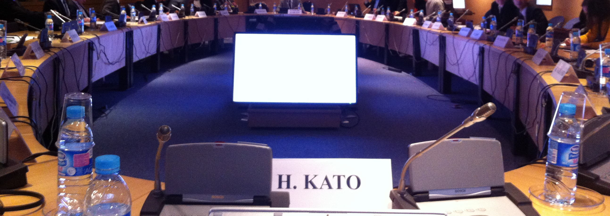

社会的貢献
これまでの研究成果や各種活動の実績，教育の経験等を活かして，社会に貢献するための様々な活動を行っています．活動の詳細については，CV（和文）をご覧ください．また，最近の活動については国際プロジェクト研究室のFacebookもご覧ください．
社会への貢献活動について

さまざまな国内外の会議や学会に出席し知見の共有や意思決定に貢献したり，大学，各種政府機関等のセミナーにコメンテーターとして参加したり，シンポジウム等で講演を行ったりすることを通じて，研究成果の社会的還元や提言などを行っています．2016年からは，ベトナム・ハノイに設立された日越大学の運営にも貢献しています．
最近の活動の例
・2026年10月：第25回日本鉄道賞授賞式で日本鉄道大賞の授与を行いました．
・2026年10月：土木学会ACECC担当委員会主催の国際セミナーにて開会の挨拶をしました．
・2026年10月：国土交通大学校にて特別講義をしました．
・2026年9月：英国・ケンブリッジ大学にて，東大・ケンブリッジ大学共同セミナーを開催しました．
・2026年9月：インドネシア・ガジャマダ大学の特別セミナーで講演しました．
・2026年9月：留学生向け新幹線セミナーでビデオ講演しました．
・2026年9月：タイ・コンケン大学の講義で講演しました．
・2026年9月：マレーシア・ジョホールのマレーシア工科大学（UTM）主催のセミナーで講演しました．
・2026年8月：ADBI（アジア開発銀行研究所）主催の国際ウェビナーで講演しました．
・2026年8月：ベトナム・ハノイの交通技術大学（UTT）のセミナーで講演しました．
・2026年8月：ベトナム・ハノイのハノイ建築大学（HAU）のセミナーで講演しました．
・2026年8月：ベトナム・ハノイの交通通信大学（UTC）のセミナーで講演しました．
・2026年7月：ADBI（アジア開発銀行研究所）主催の国際ウェビナーで講演しました．
・2026年7月：ユニバーシティカレッジロンドン（UCL)のセミナーで講演しました．
・2026年6月：東京大学新領域創成科学研究科国際協力学専攻にて特別講義を行いました．
・2026年6月：国土交通大学科校で講義を行ないました．
・2026年6月：拓殖大学国際学部にて特別講義を行いました．
・2026年6月：東京大学で開催されたProf. Erick Guerraを招いた特別講演セミナーにおいてコメンテーターを務めました．
・2026年4月：ネパール・カトマンズにて開催されたアジア土木学協会連合協議会（Asian Civil Engineering Coordinating Council：ACECC）の第50回理事会に土木学会の代表理事として参加しました．
・2026年4月：ADBI（アジア開発銀行研究所）主催の国際ウェビナーで講演しました．
・2026年4月：ドイツ連邦議会予算委員会メンバーの国会議員の方々と懇談しました．
・2026年3月：アジア工科大学（AIT)にて特別講義を行いました．
・2026年3月：チュラロンコン大学において栄誉教授公開講義を行ないました．
・2026年2月：JICA主催の課題別研修「港湾戦略運営」にてアフリカ・アジア・南米・大洋州各国からの研修生を対象に講演と演習を行いました．
・2026年2月：国連大学（東京）で開催された国際連合地域開発センター・国土交通省共催のワークショップにて基調講演を行いました．
・2026年2月：長岡技術科学大学にて特別講義をしました．
・2026年2月：第1回土木技術のグローバル化セミナー（土木学会）にて発表しました．
・2026年2月：第5回JTTRIグローバルセミナー（運輸総合研究所）にてモデレーターを務めました．
・2026年2月：鉄道建設・運輸施設整備支援機構の第9回「知のセミナー」にて特別講演を行いました．
・2026年1月：芝浦工業大学にて特別講義を行いました．
・2026年1月：米国・世界銀行本部（ワシントンDC）の特別セミナーにおいて特別講演を行いました．
・2026年1月：米国・ニューヨーク大学(NYU)Tandon School of Engineeringのセミナーシリーズで招待講演を行いました．
・2025年12月：国土交通大学校にて特別講義をしました．
・2025年10月：ADBI（アジア開発銀行研究所）主催の国際ウェビナーで講演しました．
・2025年10月：東京・高輪ゲートウェイコンベンションセンターにて開催された高速鉄道に関する国際フォーラム（IHRA）のセッションにおいてモデレーターを務めました．
・2025年10月：韓国・済州にて開催されたアジア土木学協会連合協議会（Asian Civil Engineering Coordinating Council：ACECC）の第49回理事会に土木学会の代表理事として参加しました．
・2025年10月：ベトナム・ハノイの日越大学入学式に参列しました．
・2025年9月：英国・ケンブリッジ大学土地経済学科の特別セミナーにて講演しました．
・2025年9月：英国・ケンブリッジ大学建築学科の特別セミナーにて講演しました．
・2025年9月：英国・リーズ大学交通研究所の研究セミナーにて講演しました．
・2025年9月：英国・ケンブリッジ大学マーチンセンターの特別セミナーにて講演しました．
・2025年9月：英国・バーミンガム大学工学部土木工学科の特別セミナーにて講演しました．
・2025年9月：インドネシア・スラカルタ（ソロ）で開催された第16回アジア交通学会（EASTS 2025）のHigh Level Sessionにパネリストとして参加しました．
・2025年8月：中国・雲南省南華県の現地高校にて特別講演を行いました．
・2025年7月：アジアの高速鉄道に関する国際ワークショップを東京大学・国際プロジェクト研究室にて主催しました．
・2025年7月：国際サマースクールであるDISUMA Graduate Academyを東京大学・国際プロジェクト研究室にて主催しました．
・2025年7月：横浜国立大学にて特別講義を行いました．
・2025年6月：オーストリア・ウィーン自然資源・生命科学大学（BOKU）の特別セミナーにて講演しました．
・2025年6月：オーストリア・ウィーン工科大学土木環境工学科の教員会議で発表を行いました．
・2025年6月：オーストリア・ウィーン工科大学交通研究所で研究紹介を行いました．
・2025年6月：アーヘン工科大学（RWTH Aachen University），スイス国鉄（SBB），東大（工学系電気系工学専攻・古関・大西研究室）の共同国際ワークショップにて，発表を行いました．
・2025年5月：ADBI，JICAらの共催によるインド鉄道省向けの高速鉄道に関する国際ワークショップのセッションでモデレーターを務めました．
・2025年5月：拓殖大学国際学部で特別講義を行いました．
・2025年5月：Volvo Research and Educational Foundations主催の国際研究フォーラムにてコメンテーターの一人として研究成果にコメントしました．
・2025年4月：同志社大学ビジネス研究科にてMBA所属の留学生を対象に茶話会で話をしました．
・2025年4月：ミャンマー・ヤンゴンにて開催されたアジア土木学協会連合協議会（Asian Civil Engineering Coordinating Council：ACECC）の第48回理事会に土木学会の代表の一人として参加しました．
・2025年3月：英国・ケンブリッジ大学の研究チームと国際共同セミナーを実施しました．
・2025年3月：タイ・キングモンクット工科大学の訪問団とセミナーを行いました．
・2025年3月：ベトナム・ハノイにて日越大学で講義をしました．
・2025年2月：長岡技術科学大学にて特別講義を行いました．
・2025年2月：神戸大学にて特別講義を行いました．
・2025年2月：交通時間価値および信頼性価値に関する国際ウェビナーをオーガナイズし，研究成果の発表を行いました．
・2025年1月：JICA主催の課題別研修「港湾戦略運営」にてアフリカ・アジア・南米・大洋州各国からの研修生を対象に講演と演習を行いました．
・2025年1月：熊本大学にて特別講義を行いました．
・2025年1月：芝浦工業大学にて特別講義を行いました．
・2025年1月：米国・TRB年次大会のAviation System Planning Committeeにおいて研究発表をしました．
・2024年12月：日越大学にて学部学生向けの特別講義を行いました．
・2024年12月：アジア開発銀行研究所（ADBI）主催の中国の高速鉄道に関する国際ウェビナーにて講演をしました．
・2024年12月：ミュンヘン工科大学にて研究発表を行いました．
・2024年12月：ルール大学ボッシュ校において研究発表を行いました．
・2024年11月：福岡で開催された2024年応用地域学会においてコメンテーターを務めました．
・2024年11月：国土交通省道路事業評価勉強会および委員会にてそれぞれ招待発表をしました
・2024年11月：JICA課題別研修「国土・地域開発政策」にて諸外国の行政官を対象とした特別講義をしました．
・2024年11月：米国・ワシントン大学土木環境工学科のSTAR研究室のセミナーにて招待講演を行いました．
・2024年10月：ニュージーランド・ウェリントンのニュージーランド工学会にて開催されたアジア土木学協会連合協議会（Asian Civil Engineering Coordinating Council：ACECC）の第47回理事会に土木学会の代表の一人として参加しました．
・2024年10月：ドイツ・ハンブルク港湾公社にて開催された国際港湾協会（IAPH)主催の計画・運営・財務委員会に出席しました．
・2024年10月：アジア工科大学（AIT）の学生向けにオンラインにて招待講義を行いました．
・2024年9月：スイス連邦工科大学（ETH）チューリッヒ校にて開催されたセミナーにて研究発表をしました．
・2024年9月：国土交通大学校にてインフラシステム海外展開に関する特別講義を行いました．
・2024年9月：タイ・Chulalongkorn大学の交通研究所主催のセミナーで招待講演を行いました．
・2024年9月：タイ・Khon Kaen大学College of Local Administration所属の博士課程学生向け大学院講義で特別講義を行いました．
・2024年9月：国土交通大学校・柏研修所で開催された国土交通省入省2年目職員向け研修にて講演を行いました．
・2024年9月：スウェーデン国会議員から構成される交通通信委員会委員を対象とした特別セミナー（在日スウェーデン大使館主催）にて特別講義をしました．
・2024年8月：日越大学社会基盤プログラム設立10周年記念セミナー（日越大学，土木学会共催） をオーガナイズし，発表を行いました．
・2024年7月：国土交通大学校にて特別講義をしました．
・2024年6月：拓殖大学国際学部にて特別講義を行いました．
・2024年6月：JICA研修プログラムProject for Improvement of Urban Public Transport System
in Maputoにおいてモザンビーク・マプト市からの実務者を対象に特別講義を行いました．
・2024年5月：OECD International Transport Forum (ITF)主催のWorking Groupの準備ミーティング（オンライン開催）に参加しました．
・2024年5月：OECD International Transport Forum (ITF)主催のパラトランジットに関するRound Table（ハイブリッド形式，チリ・サンチアゴ）に出席しました．
・2024年5月：タイ・バンコクで開催されたGraduate Research Academyにおいて基調講演を行うとともに，パネルディスカッションに参加しました．
・2024年5月：アジア開発銀行研究所（ADBI）主催のイタリアの高速鉄道に関する国際ウェビナーにて基調講演をしました．
・2024年4月：JICA研修プログラムProject for Enhancing Capacity of Formulation of the
Second Mass Rapid Transit Master Plan in Bangkok Metropolitan Regionにおいて，タイ・鉄道省官僚を対象に特別講義を行いました．
・2024年4月：Thammasat大学からの視察団を対象に，東京の都市鉄道計画について特別講義を行いました．
・2024年3月：第159 回運輸政策コロキウム第19 回ワシントンレポート（一般財団法人運輸総合研究所）にコメンテーターとして参加しました．
・2024年3月：ベトナム・ハノイの日越大学で開催された社会基盤プログラムレビューセミナーで発表およびパネルディスカッションに参加しました．
・2024年3月：フランス・パリで開催されたOECD International Transport Forum主催の第15回交通研究委員会（Transport
Research Committee）に日本代表の一員として出席しました．
・2024年2月：フィリピン・マニラで開催されたアジア土木学協会連合協議会（Asian Civil Engineering Coordinating Council：ACECC）の第34回Technical Coordinating
Committee Meeting ，第39回Planning Committee Meeting，第46回Executive Committee
Meetingに日本・土木学会の代表として出席しました．また，第46回Executive Corrdinating Commiteeにて開催されたFinance
Committeeに座長として参加しました．
・2024年2月：JICA主催の課題別研修「港湾戦略運営」にてアフリカ・アジア各国からの研修生を対象に講演と演習を行ないました．
・2024年2月：タイ・コンケン大学の博士課程学生向け大学院講義で特別講義を行ないました．
・2024年1月：第3回JTTRIグローバルセミナーのパネルディスカッションにてモデレーターを務めました．
・2024年1月：芝浦工業大学にて学部生向けに特別講義（英語）をしました．
・2023年12月：ベトナム交通通信大学の特別セミナーにて招待講演を行いました．
・2023年11月：JICA主催の課題別研修「国土・地域開発政策」にて各国からの研修生を対象に講演を行いました．
・2023年11月：アジア開発銀行主催のタジキスタン交通部門計画のワークショップで2日間にわたりテクニカルアドバイザーとして参画しました．
・2023年11月：公益財団法人鹿島学術振興財団第46回研究発表会にて発表しました．
・2023年11月：英国・ケンブリッジ大学建築学科の特別セミナーにて招待講演をしました．
・2023年11月：英国・リーズ大学交通研究所（ITS）で招待講演をしました．
・2023年9月：英国・ケンブリッジ大学にて開催された第8回東大・ケンブリッジ大学ジョイントシンポジウムに参加し，交通研究のジョイントセミナーを共同で開催しました．
・2023年9月：台湾・台北で開催されたアジア土木学協会連合協議会（Asian Civil Engineering Coordinating Council：ACECC）の第33回Technical Coordinating
Committee Meeting ，第38回Planning Committee Meeting，第45回Executive Committee
Meetingに日本・土木学会の代表として出席しました．また，第45回Executive Corrdinating Commiteeにて開催されたFinance
Committeeに座長として参加しました．
・2023年9月：政策研究大学院大学（GRIPS）にて開催された留学生向けの新幹線サマーセミナー2023において，我が国の大学に所属する留学生を対象に日本の高速鉄道の概略を講演しました．
・2023年9月：マレーシア・Shah Alamで開催された第15回アジア交通学会（EASTS）のフォーラムにおいて，Shah Alam市長らとともにパネルディスカッションのパネリストとして参加しました．
・2023年9月：マレーシア・Shah Alamで開催されたアジアの若手交通研究者を対象とした国際セミナー（the 3rd Early Career
Researchers Transport Forum）において招待講演を行いました．
・2023年8月：ヨルダン政府関係者を対象としたJICA研修プログラムにて特別講演を行いました．
・2023年8月：タイChulalongkorn大学土木工学科にて，学部生向けに特別講義を行いました．
・2023年8月：フィリピン政府・科学技術省，フィリピン大学国立交通研究所共催の国際ウェビナーにて招待講演を行いました．
・2023年7月：タイKhon Kaen大学College of Local Administrationにて，博士学生向けに講義を行いました．
・2023年6月：運輸総合研究所主催のシンポジウム「2050年 どうする！公共交通～2050年の日本を支える公共交通のあり方とは～」にてパネルディスカッションのコーディネーターを務めました．
・2023年4月：韓国・済州で開催されたアジア土木学協会連合協議会（Asian Civil Engineering Coordinating Council：ACECC）の第32回Technical Coordinating
Committee Meeting ，第37回Planning Committee Meeting，第44回Executive Committee
Meetingに日本・土木学会の代表として出席しました．また，第44回Executive Corrdinating Commiteeにて特別セミナーをオーガナイズしました．
・2023年3月：インド鉄道省向けの日本留学説明会（在インド日本大使館主催）に参加して，研究室活動の説明を行いました．
マスコミ等での報道等について
研究成果や活動内容を新聞・雑誌やインターネットなどを通じて広く一般の方々にも発信しています．
報道発表，新聞記事での掲載の例
・2024年5月：私たちの論文（Uchida, Kato, Murakami, Takeuchi, 2024）が複数のオンラインメディアでプレスリリースされました（Asian
Research News，EurekAlert!，2024年5月3日付）．
・2023年6～7月：私がコーディネーターをつとめたたシンポジウムについて朝日新聞，交通新聞で記事に取り上げられました（朝日新聞2023年6月23日付，交通新聞2023年6月29日，7月11日付）
・2023年7月 私のインタビュー記事がJR東日本の広報雑誌andEに掲載されました（andE，Vol.13，2023年7月号））
・2022年12月 私のコメントが日本の大手英文新聞であるThe Japan Times紙に掲載されました（The Japan Times,
2022年12月26日付け）
・2022年12月 私のインタビューが収録されたオンデマンドビデオがNHK World-Japanで配信されました（NHK World-Japan
On-demand Video Program, 2022年12月17日）
・2022年12月 私たちの論文（Maharjan and Kato, 2022）がTransport Review誌編集長の選ぶ注目論文に選定され，TwitterやLinkedInなどのSNSメディアで取り上げられました．
・2022年10月 私のインタビューがNHK Worldで報道されました（NHK World Radio Program, 2022年10月23日付け）
・2022年4月 私のコメントがTime誌の記事に掲載されました（Time，2022年4月22日付け）
・2022年4月 私のコメントが米国メディアの記事に掲載されました（Slate，2022年4月11日付け）
・2022年3月 私たちの論文（Le, Oka and Kato, 2022）の内容がプレスリリースされました（EurekAlert!，2022年3月2日付け）
・2021年6月 私も共著者となっている書籍（「これからの海外都市鉄道KISS－RAIL 2.0－計画、建設、運営－」，一般社団法人 海外鉄道技術協力協会
編著，2020）が雑誌の書評で取り上げられました（鉄道ジャーナル，2021年8月号，辻村功，p.114）
・2021年5月 私も共著者となっている書籍（「グローバル・ロジスティックス・ネットワーク～国境を越えて世界を流れる貨物」，柴崎隆一編，アジア物流研究会著：成山堂書店，2019）が新聞の記事で取り上げられました（日本経済新聞朝刊，2021年5月22日付け）
・2019年11月 私たちの論文と私のコメントが新聞の記事で取り上げられました（日本経済新聞朝刊，2019年11月25日付け）．
・2019年7月 私も参加する「自動運転・モビリティサービスで変わる未来懇談会」（座長：岸博幸慶應義塾大学教授）が記者会見を行い，新聞に記事として取り上げられました（日刊自動車新聞，交通新聞等 2019年7月2日付け）．
・2019年1月 私たちの論文が英国の著名な経済雑誌であるThe Economistで取り上げられました（The Economist, 2019年1月19-25日版）
・2019年1月 私のインタビュー・コメントが英国の著名な経済紙であるFinancial Times紙の記事に掲載されました（The Financial
Times，2019年1月29日付）．
・2018年12月 Ttime!（学生が作る東大工学部広報誌）2018冬号の学科紹介で掲載されました．
・2018年1月 私も発表したミャンマー・ヤンゴン工科大学での国際ワークショップの様子が地元のTVニュースで報道されました．
・2017年3月 私も参加したBMW Japanのワークショップの内容が「持続可能な社会に向けたBMW Japanの取り組み」として紹介されました．
・2017年1月 私も「第２次金沢交通戦略」策定の委員として参加していた金沢市のまちづくりが，第８回 ＥＳＴ交通環境大賞の大賞【国土交通大臣賞】を受賞することになりました．
・2016年10月 私たちの論文が英国の著名な経済紙であるFinancial Times紙の記事で取り上げられました（The Financial
Times，2016年10月5日付）．
・2016年9月 私がプログラムディレクタをつとめている日越大学の開学式の様子が，多数のTVや新聞で取り上げられました（NHKなど，2016年9月9日～10日）．
・2016年4月 私が委員として参加していた交通政策審議会の東京圏鉄道計画について多数のTVや新聞で取り上げられました（NHKなど，2016年4月7～21日）
・2014年9月 私の新幹線に関するコメントがフランスの有力新聞であるLe Monde紙に掲載されました（Le Monde，2014年9月30日付）．
・2014年8月 私たちがADB本店にて開催した「中央アジアにおける越境物流に関するワークショップ」の様子が，ADB内のニュースレターで発表されました（アジア開発銀行，2014年8月18日付）．
・2014年6月 私が基調講演を行った「第12回日ASEAN次官級交通政策会合」の様子が，プレスリリースされました（国土交通省，2014年6月25日付）．
・2014年6月 私が助言等を行った平成25年度政策評価の結果が国会へ報告され，その様子が多くのメディアで報道されました（日本経済新聞，福島民法新聞，山梨日日新聞，四国新聞，徳島新聞，南日本新聞，日本農業新聞，時事通信配信，共同通信配信など，2014年6月13，14日付）．
・2014年5月 私の講演した明日の金沢の交通を考える市民会議フォーラムの様子が新聞報道されました（北陸中日新聞，北國新聞，2014年5月18日付）．
・2014年5月 私の講演したヤンゴン都市圏交通マスタープランに関するセミナー（JICA主催）の様子がJICAウェブページで配信されました（2014年5月14日付）．
・2014年5月 私の講演したヤンゴン都市圏交通マスタープランに関するセミナー（JICA主催）に関する単独インタビューがミャンマーの動画専門マスメディアのウェブサイトで公開されました．．
・2014年5月 私も委員として参加している交通政策審議会陸上交通分科会鉄道部会の様子が，NHKニュース7など（2014年5月7日）で報道されました
・2014年4月 私の参加した国際セミナー「変貌する世界における都市交通に関するセミナー」(ITF/OECD主催)に関する単独インタビューがウェブで公開されました．
・2014年4月 私の参加した国際セミナー「変貌する世界における都市交通に関するセミナー」(ITF/OECD主催)について紹介がありました（運輸政策研究，Vol.17,
No.4, p.95, 2014）
・2014年4月 私の本「交通の時間価値の理論と実際」に関する書評が出ました（森杉壽芳：書評・交通の時間価値の理論と実際，運輸政策研究，Vol.17, No.4, p.36, 2014）
・2014年2月 私の本「交通の時間価値の理論と実際」に関する書評が出ました（河野達仁：書評・加藤浩徳編著『交通の時間価値の理論と実際』，高速道路と自動車，Vol.57,
No.2, p.70, 2014）
・2013年12月 私が助言等を行った政策評価の標準化・重点化について，閣議にて総務大臣より発言がありました（閣議ならびに閣議後記者会見，2013年12月24日付）
・2013年11月 私が基調講演した「日・ベトナム環境セミナー」の結果が報道発表されました（国土交通省，2013年11月14日付）
・2013年6月 私が助言等を行った平成24年度政策評価の実施状況等が国会で報告されるとともに新聞・インターネット配信などで記事になりました（国会：2013年6月21日，日本農業新聞：2013年6月22日付，時事通信：2013年6月21日付け）
・2013年3月 私がルノー本社（フランス）で講演した様子がウェブで発信されました（ルノー，2013年3月29日付）
・2013年3月 私が基調講演した「日・フィリピン環境セミナー」の結果が報道発表されました（国土交通省，2013年3月7日付）
・2012年11月 私の関わっていた日本生産性本部の交通ITSに関する提言が新聞で取り上げられました（2012年11月30日付日刊自動車新聞１面）
・2012年7月 産経新聞にコメントが掲載されました（2012年7月13日産経新聞朝刊）
・2012年4月 モスクワでのインタビューが掲載されました（The Voice of Russia，2012年4月6日付）
・2012年3月 モスクワ市での提言がニュースで報道されました（NHKニュースサイト，NHKラジオ，2012年3月31日付）
・2012年2月 「日・タイ環境セミナー」における私の講演が報道発表されました（国土交通省，2012年2月24日付）
・2012年1月 「日・インドネシア環境セミナー」における私の講演が報道発表されました（国土交通省，2012年1月20日付）
・2010年5月 「第8回日ASEAN次官級交通政策会合」における私の講演が報道発表されました（国土交通省，2010年5月19日付）
・2010年1月 私のインタビュー記事が掲載されました（カクタスコミュニケーションズのウェブサイト，2010年1月18日付）
・2010年1月 私の関わっていた日本生産性本部の道路整備に関する提言が新聞で取り上げられました（2010年1月12日付日本工業新聞，日刊建設工業新聞朝刊）
・2009年10月 日経ネットPlusにコメントが掲載されました（2009年10月16日付配信「地方空港は海外と直結せよ」）
・2009年3月 朝日新聞にコメントが掲載されました（2009年3月27日朝日新聞朝刊）
CV（和文）｜教育（講義等）｜社会的貢献｜最近の研究｜研究内容の紹介｜その他